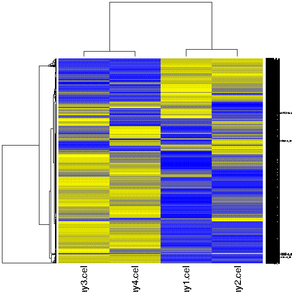

Visualizes the grouping of samples or genes as a static heatmap image. If you would like to have an interactive heatmap which scales well and allows to select genes, please run the tool "Clustering / Hierachical" and double-click on the result file hc.tre.
First both chips and genes are clustered using Pearson correlation as a distance measure and average linkage for constructing the dendrogram. These clusterings are then visualized as a heatmap, where every gene on every chip is colored according to its expression level in the data. Please note that while this tool can be applied to a dataset containing up 20 000 genes/samples, the text doesn't scale accordingly. For large data sets it is recommended to use the "Clustering / Hierachical " tool instead.
A color PNG image containing the heatmap:
